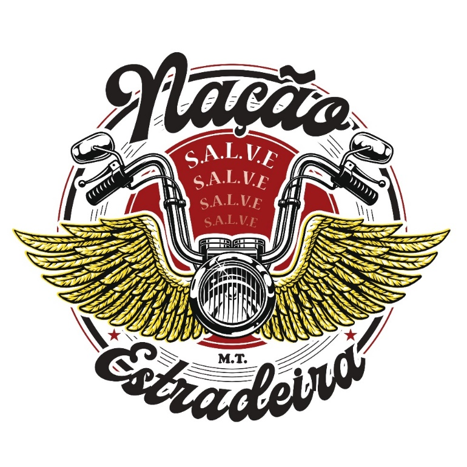
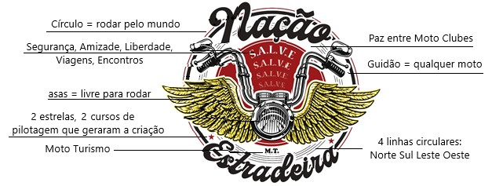

Queremos agradecer a sua presença e pelo fato de acreditar que a Nação Estradeira Moto Turismo atende os seus critérios e que irá te proporcionar um convívio saudável e Seguro, com novas Amizades e Liberdade para realizar suas Viagens e fazer ou participar de Encontros aonde for.
INÍCIO
O Nação Estradeira Moto Turismo nasceu oficialmente em 13/08/2022 a partir do seu registro em cartório, mas a Ideia da formação deste grupo é anterior e foi gestada pelo fundador 001, Johnny Falcão, que tinha o desejo de formar um grupo onde, além da camaradagem entre seus membros houvesse de fato uma preocupação com a segurança e todos adotassem técnicas mais avançadas de pilotagem e por isso a responsabilidade de cada piloto em buscar conhecimento prático e teórico para se desenvolver e garantir uma pilotagem mais segura para si, sua garupa e de todo nosso grupo.
Isso nos leva ao ponto de convergência onde, um dos pré-requisitos para ingresso ao Nação Estradeira é a atualização constante do piloto através de treinos práticos de pilotagem defensiva e participação em cursos de pilotagem avançados para melhoria da técnica, aprendizados, autoconfiança e onde todos os integrantes passem por avaliação de seus pares veteranos.
Foi em 2021 que um grupo de alunos paulistas da Academia de Pilotagem Vida em Duas Rodas, que à época era um curso on line devido à Pandemia, reunia-se para fazer os treinamentos práticos do curso que eram filmados e depois enviados para avaliação do Coordenador e instrutor do Curso da Academia Vida em Duas Rodas. Foi à partir da sugestão do Johnny que a ideia de formar este grupo foi lançada e começaram as adesões por parte de alguns alunos da Academia. A Coisa foi tomando corpo e se estruturando, ganhando forma e como havia alunos desta mesma academia que eram de outros Estados e também um integrante no Paraguay, o convite foi estendido e o grupo foi aumentando de forma espontânea. Em pouco tempo já éramos mais de 50 integrantes.
Houve necessidade a partir de um determinado momento, daquele grupo de fundadores formalizar o movimento, través de seu registro em cartório. A Partir daí constituiu-se um grupo diretivo, estabeleceram-se premissas de condutas e um estatuto para organizar o Nação Estradeira Moto Turismo.
Como em toda agremiação é difícil acomodar os desejos de todos, mas o Nação é um grupo flexível e gregário onde qualquer divergência é colocada para que em grupo se encontre um ponto de equilíbrio. Ao final prevalece a decisão da maioria através do bom senso dos participantes, que em grande parte é formado por homens e mulheres maduros, que buscam fortalecer o grupo, garantindo-se sempre espaço ao contraditório e o devido respeito às ideias e sugestões de seus membros.
O Corolário de nossos Valores e Ideais está muito bem declarado em nossa saudação. O SALVE NAÇÃO vai além de um cumprimento entusiasta e forte, suas letras formam a nossa concepção do que é ser um MOTO ESTRADEIRO de verdade e tudo o que para nós é importante: SEGURANÇA, AMIZADE, LIBERDADE, VIAGENS E ENCONTROS.
Vida Longa NAÇÃO ESTRADEIRA MOTO TURISMO!!
FUNDAÇÃO REGISTRO
O NAÇÃO ESTRADEIRA tem REGISTRO na data 13/08/2022 (treze de agosto de dois mil e vinte e dois) e constitui-se por prazo indeterminado.
A Sede Nacional da Associação fica estabelecida na Rua Dr. Antônio Roberto Neto, 77, Jd. Esmeralda, SP, CEP 05366-160.

FINALIDADE
A Associação de Motociclistas Nação Estradeira Moto Turismo, ou simplesmente NAÇÃO ESTRADEIRA, ou ainda simplesmente Associação, é uma associação civil sem fins lucrativos e tem como finalidade a promoção de uma pilotagem segura, responsável e técnica e que estimula a fraternidade e cooperação entre seus membros, assim como entre esta associação e outras agremiações de motociclistas e/ou motociclistas independentes.
Tem ainda como FINALIDADE a promoção e defesa da boa imagem do motociclista amador, a participação, sempre que possível, em atividades sociais, esportivas, culturais e cívicas, a promoção para seus integrantes de viagens turísticas e de lazer em veículos contemplados pela CNH de categoria A pelo Brasil e exterior, a participação em confraternizações com outras associações de motociclistas, a prestação de serviços sociais e filantrópicos por meio de atividades específicas a serem definidas em reunião por seus diretores.
MOTO TURISMO MT ou MOTO CLUBE MC ??
No momento da reunião para fundação do NE surgiu esta pergunta: MC ou MT?
MOTO CLUBE tem como premissa encontros, reuniões e MOTO TURISMO tem como foco principal o turismo, viagens e foi por este objetivo principal que optamos por Associação de Motociclistas Nação Estradeira Moto Turismo, ou simplesmente NAÇÃO ESTRADEIRA.
FINANCEIRO, FILANTROPIA
As fontes de recursos constitutivas do patrimônio são as seguintes:
a) Contribuições eventuais e ou, periódicas de seus associados;
b) Resultados de promoções e eventos correlatos aos seus objetivos;
c) Rendimentos provenientes de aplicações financeiras;
d) Doações e legados recebidos;
e) Demais valores permitidos por lei.
As ações de FILANTROPIA serão custeadas por rateios e/ou doações e o DIRETOR de FILANTROPIA administra qualquer informação e direcionamento desta ação.
S.A.L.V.E.
Este acrônimo foi criado no início da formação do NAÇÃO ESTRADEIRA por seus fundadores:
S - SEGURANÇA,
A - AMIZADE,
L - LIBERDADE,
V - VIAGENS,
E - ENCONTROS.
O SALVE NAÇÃO vai além de um cumprimento entusiasta e forte, suas letras formam a nossa concepção do que ser um MOTO ESTRADEIRO de verdade.
HINO
SIM, temos um, criado pelo Fundador 001 Jonnhy, cantado por todos pela primeira vez no 1º A.N.E. em São Bento do Sul – SC e se encontra nas plataformas de mídias eletrônicas
Salve nação,
Salve nação,
Salve nação estradeira (bis)
Salve, Salve nação, Salve nação estradeira
Uma nação é mais que um país
O meu quintal vai além das fronteiras
E sem limites eu sou mais feliz
Nossas origens são nossos países
Mas nem por isso criamos raízes
Sou brasileiro, sou paraguaio,
yo soy chileno, soy uruguayo,
soy argentino, boliviano,
!yo soy sudamericano!
Salve nação!
Salve nação estradeira
Salve nação
Minhas viagens não são brincadeiras
Viajo e rodo o mundo inteiro
Com segurança e boas maneiras
Motociclista eu sou estradeiro
Eu sou piloto e sou passageiro
Eu faço parte da paisagem
Do maquinário que é esse mundo
Eu sou a principal engrenagem
Cidadão do mundo
Nação estradeira (7x)
Salve nação!
Salve nação estradeira
Salve nação
Moto parada na garagem estraga
É um enfeite na porta de casa
De que adianta ser pouco rodada?
Quer ver a minha, me encontre na estrada
Moro no mundo, não tenho parada
Amo ser livre, não faço planos
Com duas rodas me sinto com asas
Sou um garoto, tenho 20 anos
Salve nação!
Salve nação estradeira
Salve nação
CARGOS DIRETORIA, FUNÇÕES e ELEIÇÃO
Cargo
Função
Presidente
Votação Direcionar NE
Vice-presidente
Administrar e substituir o Presidente na sua ausência
Secretária
Administrar socialmente NE
Diretor Administrativo
Administrar o financeiro NE
Comissão de Ética
Análise de admissão de novos membros
Análise de comportamento (Indiciado pelo Diretoria)
Diretor de Curso
Promover a prática de cursos
Análise dos cursos de 30 horas
Diretor Social
(em definição)
Diretor de Filantropia
Análise de pedidos de ajuda
Promover a ajuda para membros
Solicitar aos membros contribuições voluntárias
Diretor Jurídico
Manutenção do Estaturo
Administrar assuntos jurídicos
Diretor Regional
Administrar a região correspondente
Promover encontros regionais
Diretoria provida de ELEIÇÃO a cada 2 anos.
NOSSAS EXIGÊNCIAS: ÉTICA SOCIAL, COLETE E TREINAMENTO
O NAÇÃO ESTRADEIRA na parte SOCIAL, não terá cunho político ou partidário, nem fará distinção sobre classe social, cilindrada da motocicleta, nacionalidade, sexo, raça, cor, ou crença religiosa para quem pretenda dele participar nem de qualquer outra pessoa que a ele se dirija.
Use o COLETE com respeito e dignidade pois representa o NAÇÃO ESTRADEIRA, seus membros, princípios, história e valores.
TREINAMENTOS: Buscando aprimoramento contínuo de seus integrantes e distinção de cada piloto, a participação em cursos de pilotagem, teóricos e práticos, serve como requisito para o ingresso de novos membros. Nosso compromisso é continuar treinando e promovendo entre os membros ativos a realização de treinos práticos, pois isso é um dos pilares do NAÇÃO ESTRADEIRA cuja meta é ampliar a segurança do motociclista melhorando sua competência técnica de pilotagem para que todos pilotem com consciência e retornem bem para seus lares e familiares.
REUNIÕES - Temos (03) três tipos:
01 REUNIÃO MENSAL ON LINE, não obrigatória. Sempre gravada com os participantes presentes e digitada posteriormente para ser tornar um Ata de Reunião Mensal.
02 REUNIÃO ESTADUAL LIVRE, fica a critério de cada região e ou estado e ou municípios organizar uma reunião social e se possível com treino, passeio e deslocamento em grupo.
03 REUNIÃO GERAL PRESENCIAL ANUAL em um Estado, comemorando o aniversário da Nação Estradeira onde recebe a configuração de A.N.E. Realizamos encontro social, premiações, brindes, passeios em grupo, almoço e jantar. No final desta é revelado o Estado escolhido para o próximo A.N.E.
MEMBROS, COMBOIO, SINAIS E CÓDIGOS DE CONDUTA
ÉTICA MOTOCICLÍSTICA: Respeitar todo tipo de condutor, pedestre e o Código de Trânsito Brasileiro CTB e Internacional.
RESPEITO INTERNO: Todos temos nossos limites e habilidades, cor, religião, sexo enfim, escolhas particulares. O Princípio a ser praticado: A minha LIBERDADE termina onde inicia a LIBERDADE do outro indivíduo.
RESPEITO AOS OUTROS MC: Respeite e será respeitado, ajude e será ajudado, promova sempre a PAZ.
COLETE USO CORRETO: Ao usá-lo lembre-se que VOCÊ está identificado e identificando o NAÇÃO ESTRADEIRA MT, representa uma história que está sendo construída, o seu COLETE tem um peso igual ao outro COLETE de um MC ou MT ou um GRUPO que está iniciando.
TREINAMENTO: Ao entrar você encontrou a segurança em pertencer ao NAÇÃO ESTRADEIRA, por este motivo, pois quer andar com segurança e ter membros ao seu redor com a mesma visão.... Então continue treinando e se aprimorando pois é na frequência do treino que você descobre os segredos de pilotar com mais segurança e com a direção mais ativa.
Listamos abaixo as condições iniciais de ingresso no Nação Estradeira, Regras de comportamento e organização de deslocamento de cada integrante e líder de COMBOIO, Sinais do motociclismo quando em trânsito de COMBOIO e o Código BIKER que adotamos. Estas informações e procedimentos estão registrados em nosso ESTATUTO.
MEMBROS
INICIANTE ou PRÓSPERO - Após ser aprovado pelo Conselho de Ética, terá um período 12 meses para ser observado em atitudes, reuniões, encontros, treinos de pilotagem.
Durante este período se assim desejar poderá usar o colete de sua escolha sem Patch.
Deverá paralelamente estar realizando um curso de pilotagem de no mínimo 30 horas.
Ao término deste período de inicialização, com a sua aprovação de 30 horas e o teste de manobra aplicado por um Diretor, o Conselho de Ética verificará o seu histórico geral de 01 (hum) ano quanto ao seu comprometimento com a NE e após ser aprovado receberá o direito de adquirir o Brasão e os Patchs completos e assim fixar no colete.
AMICO - Quando um membro da NE se encontra em uma situação particular precisando de uma observação temporária, a Comissão de Ética ao receber a informação analisa e de acordo com a Diretoria após aprovado a situação do membro, concede a ele a posição temporária de AMICO onde o membro não é excluído do NE, porém fica dispensado das atividades que no momento o ajudará a se restabelecer. Tudo resolvido, ele comunica a Comissão de Ética e assim volta as atividades.
A nossa visão é Amizade como maior elo de ligação entre nós, como o anagrama S.A.L.V.E.
COMBOIO
É como andamos juntos, ou seja, as nossas regras de comportamento e organização de deslocamento de cada integrante e líder de COMBOIO. Desta forma temos mais segurança no deslocamento, respeitamos o CTB (Código de Trânsito Brasileiro), demais veículos e não provocamos tensões dentro e fora do grupo.
Este procedimento está registrado em nosso ESTATUTO, com livre acesso à todos.
SINAIS
É o modo de falarmos na mesma “língua” os sinais do motociclismo quando em trânsito de COMBOIO.
Este procedimento está registrado em nosso ESTATUTO com livre acesso à todos..
CÓDIGO BIKER
Este CÓDIGO não substitui e está abaixo do CTB ou outra LEI de TRÂNSITO INTERNACIONAL.
Surgiu há décadas entres os MC e seu pilar é o respeito ao motociclismo: moto clubes, moto turismo, coletes, comboio, ajuda.
Não está publicado, não tem autor, pois dependendo da região tem suas variações.
Use-o com inteligência lembrando que tem suas variações e interpretações.
DEFINIÇÃO simples: Motociclistas unidos por um laço de verdadeira amizade, camaradagem, companheirismo e fidelidade que alguns chamam: “O CÓDIGO BIKER”. Pelo código, você recebe de nós, exatamente o que nos dedica: – Se deseja ser respeitado, basta nos respeitar.
BRASÃO
Cada detalhe no nosso BRASÃO foi adicionado com um significado, sendo esta a nossa a maior expressão de nossos corações unidos por este BRASÃO e também uma marca da Nação Estradeira para ser levada as estradas.

COLETE LAYOUT PADRÃO OBRIGATÓRIO
Layout padrão com PATCH OFICIAL obrigatório: Cargo, Nome, Fundador ou Membro, Vírgula (costas ou frente), Brasão pequeno (peito frente), Brasão grande (costas), Patches de conquista facultativos.